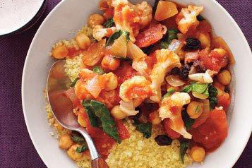
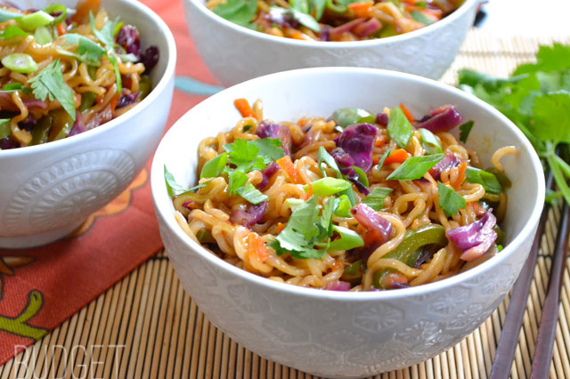
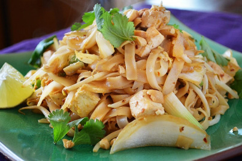
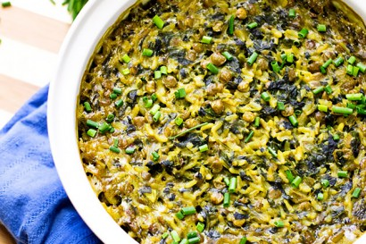
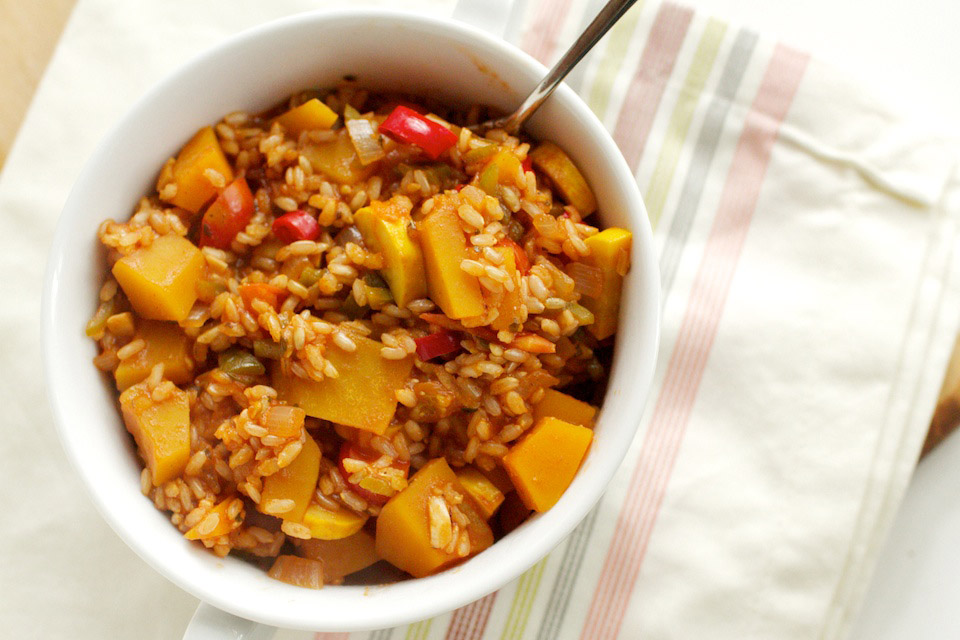
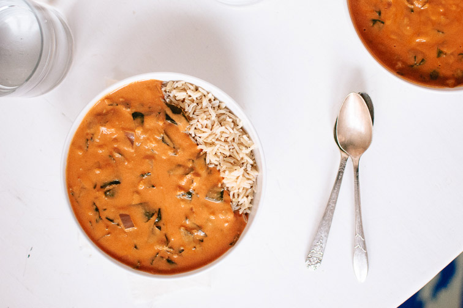

Curried Eggplant With Tomatoes and Basil
Ingredients
- 1 cup white basmati rice
- salt and black pepper
- 1 tablespoon olive oil
- 1 onion, chopped
- 2 pints cherry tomatoes, halved
- 1 eggplant (about 1 pound), cut into ½-inch pieces
- 1½ teaspoons curry powder
- 1 15.5-ounce can chickpeas, rinsed
- ½ cup fresh basil
- ¼cup soy yoghurt, optional
In a medium saucepan with a tight-fitting lid, combine the rice, 1½ cups water, and ½ teaspoon salt and bring to a boil. Stir the rice once, cover, and reduce heat to low. Simmer for 18 minutes. Remove from heat and let stand, covered, for 5 minutes.
Meanwhile, heat the oil in a saucepan over medium-high heat. Add the onion and cook, stirring occasionally, until softened, 4 to 6 minutes.
Stir in the tomatoes, eggplant, curry powder, 1 teaspoon salt, and ¼ teaspoon black pepper.
Cook, stirring, until fragrant, about 2 minutes. Add 2 cups water and bring to a boil. Reduce heat and simmer, partially covered, until eggplant is tender, 12 to 15 minutes. Stir in the chickpeas and cook just until heated through, about 3 minutes.
Remove the vegetables from heat and stir in the basil. Fluff the rice with a fork. Serve the vegetables over the rice with yogurt, if using.
Real SimpleAvocado Quesadillas

Ingredients
- 1/2 avocado, more if you prefer
- 1 small roma tomato, diced
- 1 green onion, sliced
- 2 tsp. nutritional yeast
- Seasonings of choice, for example smoked paprika, cumin, garlic powder
- Salsa (optional)
- 1 large tortilla
Smash avocado and spread out on one half of the tortilla. Sprinkle with nutritional yeast and any seasonings. Add tomato, green onions, and salsa. (Or save the salsa for dipping!)
Fold over the top half of the tortilla, and place on a skillet over medium heat. Heat for a few minutes on each side until warmed through.
The Garden GrazerSpringrolls

Ingredients
- a package of rice paper / spring roll paper
- nori sheets
- 1/2 large cucumber, cut into strips
- 2 carrots, skinned and cut into strips
- 1-2 hass avocados, cut into strips
- 5-10 green onions, cut in half to shorten length
- one bunch of sprouts or frisée
- 8 romaine lettuce or cabbage leaves, cutting out thick ribs
- vegan cream cheese (optional)
- sesame seeds (as garnish)
- 6 tablespoons Tamari or soy sauce
- 1 large garlic clove, minced
- 1/2 teaspoon Wasabi powder (optional)
For the nori flakes, take a package of nori sheets, put it in a blender/food processor, and blend until the nori is milled.
Cut your cucumbers, carrots, and avocados into 3-4 inch (7-10 cm) strips. The green onions can stay intact. Cut out the thick ribs from the lettuce. Have an assembly station ready: rice paper, a large bowl or pie pan filled with warm water, a plate for creating/rolling the wraps, and a plate to place your rolls when they are done.
When ready, place a sheet of rice paper in the warm water for 10 seconds. The paper will start to soften.
Next, place the softened rice paper on the assembly plate. In the middle of the paper, spread your cream cheese (optional), sprinkle a pinchful of nori flakes, and place on your cucumbers, carrots, green onion, avocado, and sprouts.
As for the lettuce, if you are using romaine, try to compact it on top of your veggies as much as possible to make rolling easier. Roll your spring roll like a wrap; take a horizontal edge and wrap it around the vegetables, fold the sides in, and continue to wrap until everything is secure.
Make the dipping sauce by taking wasabi powder, minced garlic, and Tamari (or soy sauce). Whisk together and place in a bowl. Garnish with sesame seeds and enjoy!
This Vegan GirlZucchini Noodles with Avocado Sauce

Ingredients
- 1 zucchini
- ⅓ cup water (85 ml)
- 2 tbsp lemon juice
- 1 avocado
- 4 tbsp pine nuts
- 1¼ cup basil (30 g)
- 12 cherry tomatoes
- 1 head cauliflower, cored and cut into small florets
- 1/2 cup raisins
- 1 5-ounce package baby spinach, chopped
- 1 cup couscous
Make the zucchini noodles using a peeler or the Spiralizer. Blend the rest of the ingredients (except the cherry tomatoes) in a blender until smooth. In a large bowl, combine noodles, avocado sauce and cherry tomatoes.
Simple Vegan BlogLinguine With Caper and Green Olive Sauce
Ingredients
- 1 tablespoon olive oil
- 2 cloves garlic, thinly sliced
- 1/4 teaspoon crushed red pepper flakes
- 1 26-ounce jar marinara sauce
- 1 6.75-ounce jar Spanish olives, drained and roughly chopped
- 1 3.5-ounce jar capers, drained and roughly chopped
- 1/2 cup fresh flat-leaf parsley, coarsely chopped
- 1/2 teaspoon lemon zest
- 1 1-pound box linguine
Heat the oil, garlic, and crushed red pepper in a large saucepan over medium heat until fragrant, about 2 minutes. Add the marinara sauce, olives, capers, parsley, and lemon zest. Reduce heat to low and simmer for about 15 minutes.
Meanwhile, cook the linguine according to the package instructions. Drain and add to the sauce, tossing to coat. Transfer to a serving dish.
Real SimpleCauliflower and Chickpea Stew With Couscous
Ingredients
- 2 tablespoons olive oil
- 1 medium onion, chopped
- 1 1/2 teaspoons ground cumin
- 1/2 teaspoon ground ginger
- salt and black pepper
- 1 28-ounce can whole tomatoes
- 1 15-ounce can chickpeas, rinsed
- 1 head cauliflower, cored and cut into small florets
- 1/2 cup raisins
- 1 5-ounce package baby spinach, chopped
- 1 cup couscous
Heat the oil in a large saucepan over medium heat. Add the onion and cook, stirring occasionally, until it starts to soften, 4 to 5 minutes.
Add the cumin, ginger, ½ teaspoon salt, and ¼ teaspoon pepper and cook, stirring, until fragrant, 1 minute.
Add the tomatoes (crushing with your hands as you add them) and their liquid, chickpeas, cauliflower, raisins, and ½ cup water and bring to a boil. Reduce heat and simmer until the vegetables are tender and the liquid has slightly thickened, 15 to 20 minutes.
Fold in the spinach and cook until just wilted, 1 to 2 minutes. Meanwhile, place the couscous in a large bowl. Add 1 cup of hot tap water, cover, and let sit for 5 minutes. Fluff with a fork. Serve with the stew.
Real SimpleCool Southwestern Salad With Corn and Avocado

Ingredients
- 2 small heads romaine lettuce, cut into bite-size pieces (about 12 cups)
- 1 cup corn kernels (cut from 1 to 2 ears, or frozen and thawed)
- 2 avocados, cut into 1-inch pieces
- 15.5-ounce can pinto beans, rinsed
- 1/2 red onion, thinly sliced
- 1/2 cup fresh cilantro
- 1/4 cup extra-virgin olive oil
- 1/4 cup fresh lime juice
- 1/2 teaspoon ground cumin
- salt and black pepper
- 1/2 9-ounce bag tortilla chips
In a large bowl, combine the lettuce, corn, avocados, beans, onion, and cilantro.
In a small bowl, whisk together the oil, lime juice, cumin, ¾ teaspoon salt, and ¼ teaspoon pepper. Drizzle dressing over the salad and gently toss. Serve with the tortilla chips.
Real SimpleEasy tomato and basil soup
Juicy, plump tomatoes and aromatic fresh basil come together beautifully in this simple, fresh and vibrant soup which takes only ten minutes to make.
Ingredients
- 1 teaspoon olive oil (optional)
- 1 medium onion chopped
- 3 - 4 large cloves of garlic
- 7 cups of chopped fresh tomatoes
- 1 handful of basil (leaves and stalks are fine)
- 1 - 2 teaspoons salt (add to taste)
- Around 1 teaspoon pepper (add to taste)
Heat a pan over a medium heat and add the oil. When hot add the onions and garlic and cook for about 1 minute. Add the chopped tomatoes.
Continue to cook over a medium heat, stirring every few minutes until the tomatoes have broken down and are soft. Remove from the heat and add basil and salt and pepper.
A Virtual VeganVegan Loaded Sweet Potato
The ultimate vegan loaded sweet potato - packed with kale, black beans, and topped off with a homemade green goddess dressing. Perfect for a quick and easy weeknight meal.
Ingredients
- Two medium sweet potatoes
- 1 can black beans, drained and rinsed
- 1 bunch kale
- 1 tbsp extra virgin olive oil
- 1 clove garlic, minced
- salt and pepper to taste
Preheat oven to 375 degrees. Line baking sheet with parchment paper. Using a fork, poke multiple holes into both sweet potatoes. Place potatoes in oven and bake for about 45-60 minutes, or until tender.
In the meantime, heat olive oil over medium heat in medium saucepan. Add garlic and cook for a couple minutes, until fragrant and before browns.
Add kale and toss to coat. Add 1/3 cup water and cover for five minutes. Remove cover, toss kale, reduce heat, and cook for another 15 minutes or until kale is desired texture, adding more water as needed..
Add beans to kale and cook until warmed. Season with salt and pepper to taste. Cut sweet potatoes in half lengthwise. Top with black beans, kale, and the Green Goddess Dressing.
Karalydon.comBlack bean sweet potato burgers

Ingredients
- 300g of sweet potatoes (1.3 cups smashed after steaming, or approx. 2 smaller sweet potatoes peeled and chopped)
- 3 dl cooked rice (basmati or similar)
- 2 dl black beans, no salt added, drained and rinsed
- 1/2 dl a red onion chopped finely
- 1/2 tbsp olive oil
- 2-3 tsp chili powder
- Salt/pepper to taste
- 1 avocado
- 1/2 lime juice
- 1.5 tsp chili powder
- Salt/pepper to taste
- 1 tbsp olive oil
- Buns
- Lettuce / Tomato
Spread:
Extras:
First get a stove top pan and add 1/4 cup of water to it, (leave it off) Start pealing and chopping (if not using frozen bag) your sweet potatoes and placing them in the pan with the a TINY splash of water, once added turn on medium heat and cover the pan with a lid and let simmer until soft, 20-30 minutes depending on how small you chopped the sweet potatoes. (they should be mash-able with a fork or spoon like mashed potatoes).
Prep the rest of your ingredients, chop your onion and place in a large bowl, add your black beans that have been drained and rinsed, add your corn, add your rice and peppers if choosing to!
Once potatoes are cooked and soft turn off the heat, using a spoon smash them until they look like mashed potatoes, some lumps are ok but try to get rid of as many as possible. Add the smashed sweet potatoes to the other mixture of ingredients and mix everything together
Add your olive oil if using, salt, pepper, chili powder and mix everything well! add flax egg here if you are choosing too.
To cook, form large party's and place them on a skillet pan that has been sprayed with non-stick cooking spray and cook until browned on both sides (flipping when needed) mine took about 5-7 minutes on each side.
To prepare the spread: Place all the ingredients into a food processor: the avocado, lime juice, salt, pepper, chili powder, olive oil and blend until creamy.
Assemble: Apply some spread to one side of your bun, lettuce and tomato to the other, place a burger on the tomato and top with you top bun!
Thwo RaspberriesCurried Coconut Quinoa and Greens with Roasted Cauliflower
Ingredients
- 1 head cauliflower, cut into bite-sized florets
- 2 tablespoons melted coconut oil or olive oil
- ¼ teaspoon cayenne pepper
- Sea salt
- 2 teaspoons melted coconut oil or olive oil
- 1 medium yellow onion, chopped
- 1 teaspoon ground ginger
- 1 teaspoon ground turmeric
- ½ teaspoon curry powder of choice (optional)
- ½ teaspoon ground cardamom
- 1 can (14 ounces) light coconut milk
- ½ cup water
- 1 cup quinoa, rinsed well in a fine mesh colander
- ⅓ cup raisins
- 1 teaspoon sea salt
- 1 tablespoon apple cider vinegar
- 4 cups baby arugula or chopped chard, spinach, maybe even kale*
- Optional garnishes: 2 green onions, chopped, and a sprinkle of red pepper flakes
Roasted Cauliflower
Curried coconut quinoa with greens
Roast the cauliflower:
Preheat oven to 425 degrees Fahrenheit. Toss the cauliflower florets with coconut oil, cayenne pepper and a light sprinkle of sea salt. Roast for 25 to 30 minutes on the middle rack, turning halfway, until the cauliflower is tender and golden on the edges.
Cook the quinoa:
In a large pot with a lid, warm the coconut oil over medium heat. Add the onion and cook until it is turning translucent, stirring often, about 5 minutes. Add the ginger, turmeric, curry powder and cardamom and stir until fragrant, about 30 seconds. Pour in the coconut milk, water, rinsed quinoa and raisins. Bring the mixture to a boil, then cover and reduce heat to a simmer. Cook for 15 minutes, then remove the pot from heat and let it rest for 5 minutes.
Fluff the quinoa with a fork. Stir in the salt, vinegar and greens (if you intend to eat this dish as leftovers, I recommend storing leafy greens separate from the quinoa, as the greens don't reheat well). Divide the quinoa into bowls and top with roasted cauliflower. Garnish with green onions and red pepper flakes if you'd like.
Cookie KateVegetable stir fry with Noodles
Ingredients
- 2 Tbsp vegetable oil
- ½ head purple cabbage
- 2 green bell peppers
- 2 carrots
- 1 yellow onion/li>
- 2 3-oz. bricks of ramen noodles
- ¼ cup soy sauce
- 3 Tbsp brown sugar
- 2 Tbsp hot sauce (or less)
- 1 Tbsp cornstarch
- 3 green onions, sliced
- handful cilantro (optional)
- 1 cup quinoa, rinsed well in a fine mesh colander
- ⅓ cup raisins
- 1 teaspoon sea salt
- 1 tablespoon apple cider vinegar
- 4 cups baby arugula or chopped chard, spinach, maybe even kale*
- Optional garnishes: 2 green onions, chopped, and a sprinkle of red pepper flakes
1. Remove the core and any wilted outer leaves from the cabbage, then cut it into very fine strips. Cut the onion and green bell pepper into thin strips as well. Use a large holed cheese grater to shred the carrots.
2. In a small bowl prepare the sauce by stirring together the soy sauce, brown sugar, sriracha, and corn starch.
3. Begin to cook the noodles according to the package directions (boil for 3 minutes, or until tender). Drain the cooked noodles in a colander.
4. Heat the vegetable oil over medium high heat in a large skillet until it is hot and shimmering. Add the vegetables and sauté for only a few minutes, or until the vegetables just begin to soften. Pour the prepared sauce into the skillet and continue to sauté for one to two minutes more, or until the sauce has thickened and coated all of the vegetables. Turn off the heat.
5. Add the cooked and drained noodles to the stir fried vegetables and toss to combine. Top with sliced green onions and a handful of fresh cilantro, if desired.
BudgetbytesVegan Pad Thai
Ingredients
- 1 cup water, plus more for soaking the noodles
- nori sheets
- 1 10-oz package rice noodles or ramen-style noodles
- 2 tbsp olive oil
- 2 cloves garlic
- 1/2 12-oz package extra-firm tofu, drained and cut into chunks
- 4 tbsp soy sauce
- 2 tbsp peanut butter
- juice of 2 limes
- 3 tbsp sugar
- Sriracha, to taste
- Sliced green onions, for garnish
- Chopped peanuts, for garnish (optional)
Fill a large microwave-safe bowl with water and heat in the microwave until boiling. Carefully submerge the rice noodles in the water and let soak for about 15 minutes. In a large frying pan, heat the olive oil over medium heat and add the garlic cloves and tofu chunks. Drizzle 1 tablespoon of the soy sauce over the tofu and sauté until golden brown. In a small bowl, whisk together the peanut butter, lime juice, sugar, Sriracha, remaining soy sauce, and 1 cup of water. Add the soaked noodles and peanut butter mixture to the tofu and cook through, about 5 minutes. Garnish with sliced green onions and chopped peanuts.
PetaLentil-Quinoa Salad
Ingredients
- 1 cup quinoa
- 5 cups water
- 1 cup green or red lentils
- 1/4 cup finely chopped shallot
- 2 tbsp dijon mustard
- Juice of 1/2 lemon
- 1/3 cup olive oil
- Salt and pepper, to taste
- 1/4 cup chopped parsley
Place the quinoa and 2 cups of water in a pot. Bring the water to a boil, then reduce the heat to a simmer and cover. Cook for 15 to 20 minutes, until quinoa is light and fluffy. In a separate pot, bring 3 cups of water to a boil. Add the lentils. Bring the water back to a boil, then reduce the heat to a simmer and cover. (Green lentils usually take about 25 to 30 minutes to cook, while red ones require closer to 20 minutes.) While the quinoa and lentils are cooking, prepare the dressing: Whisk together the shallot, mustard, and lemon juice. Add the oil slowly, whisking until emulsified. Season with the salt and pepper. Mix the prepared quinoa and lentils with the chopped parsley in a large bowl. Pour the dressing over the quinoa, lentil, and parsley mixture and mix well. Serve warm or cold.
PetaCurried Spinach Rice Lentil Bake
Ingredients
- ⅔ cup raw brown lentils
- 2⅔ cups water
- 1 cup chopped onion (yellow or red)
- 1 bunch fresh spinach (finely chopped)
- 3 tbsp olive or canola oil
- 2 tsp yellow curry powder
- ½ tsp salt
- ½ tsp freshly ground black pepper
- 1 cup brown rice
- 2 cups coconut milk
Cook Lentils: Measure the lentils into a strainer, pick over and remove any stones. Rinse thoroughly under running water. Transfer rinsed lentils to a saucepan, add 1-1/3 cup of water to lentils. On a stove top, bring the water to a boil then set the heat to medium low to simmer for 25 minutes. In another saucepan, add brown rice and 1-1/3 cup of water. On a stove top, bring the water to a boil then set heat to low to simmer for 10 minutes. While lentils and rice are cooking, use knife or food processor to chop onions, garlic, and spinach into fine pieces. Preheat oven to 350 ºF. In a large skillet, heat oil over medium-high heat. Add chopped onions and garlic; then stir until onions are translucent and softened. Stir in rice, curry powder, salt and pepper; cook 2 more minutes. Add chopped spinach, cooked lentils and coconut milk; cook for 1 minute. Transfer the lentil rice mixture to an oven safe dish; cover with oven safe lid or aluminum foil and bake 35 minutes.
Light Orange BeanButternut Squash Jambalaya
Ingredients
- 1 medium butternut squash
- 1 tablespoon olive oil
- 1/2 cup onions
- 1/2 cup green pepper
- 1/4 cup red pepper
- 1 clove garlic, minced
- 1/4 cup celery
- 1/2 cup tomatoes
- 1 teaspoon vegan Worcestershire sauce
- 2 teaspoon hot sauce
- 3/4 cup rice
- 2 cup veggie stock
- 1 cup tomato sauce
- 1 teaspoon each garlic powder and paprika
- 1/2 teaspoon each oregano, thyme, and onion powder
- 1/4 teaspoon cayenne pepper
To prepare vegetables, peel and cut the butternut squash into 1/2" cubes. Measure out roughly 3 cups and save the rest for use in another recipe. Dice the onion, peppers, celery, and tomatoes. In a large skillet, heat olive oil over medium heat. Add onions, peppers, and celery to oil. Cook onions until they begin to soften, about three minutes then add in garlic, squash, tomatoes. Continue to cook for 2-3 more minutes then pour in the Worcestershire sauce, hot sauce, and rice. Cook rice in mixture for 1-2 minutes before adding liquids. Finally, add remaining ingredients, bring to a boil, and reduce then to a simmer. Stir often until rice absorbed all the liquid (about 20-30 minutes- this really depends on your heat source) Remove from heat and serve.
Naturally EllaQuick Chana Masala
Ingredients
- 1 tablespoon coconut oil or olive oil
- 1½ teaspoons cumin seeds (scale back a little if you're not crazy about cumin)
- 1 yellow onion, chopped
- 1 tablespoon pressed or minced fresh garlic (about 5 cloves)
- 1 tablespoon peeled and minced fresh ginger (about a 1-inch piece)
- 1 green Serrano pepper, minced
- 1½ teaspoons garam masala (or tikka masala)
- 1½ teaspoons ground coriander
- ½ teaspoon ground turmeric
- ¾ teaspoon fine-grain sea salt
- ¼ teaspoon cayenne pepper (optional)
- 1 can (28 ounces) whole peeled tomatoes, with their juices
- 2 cans (14 ounces each) chickpeas (or 3 cups cooked chickpeas), drained and rinsed
- 1 cup uncooked brown basmati rice, for serving (rice is optional, I like to cook extra rice to have on hand for other meals)
- Lemon wedges, for garnishing
- Fresh cilantro, chopped, for garnishing (optional)
1. Cook the rice (if you want to serve the chana masala on rice): Bring a large pot of water to boil on the stove. Pour in the rice and give it a stir. Boil the rice for 30 minutes, then turn off the heat and drain the rice. Return the rice to the pot and cover the pot. Let the rice steam for 10 minutes. Remove the lid, fluff the rice with a fork and season with sea salt to taste.
2. Cook the chana masala: In a Dutch oven or large saucepan, heat the oil over medium heat. When a drop of water sizzles upon hitting the pan, reduce the heat to medium-low and add the cumin seeds. Toast the seeds for a minute or two, stirring frequently, until the seeds are golden and fragrant. Watch carefully to avoid burning the seeds.
3. Raise the heat to medium and stir in the onion, garlic, ginger and serrano. Cook for about five minutes, stirring often. Stir in the garam masala (or tikka masala), coriander, turmeric, salt and cayenne (if using), and cook for two more minutes.
4. Add the whole peeled tomatoes and their juices. Use the back of a wooden spoon to break the tomatoes apart. You can leave some chunks of tomato for texture.
5. Raise the heat to medium-high and add the chickpeas. Bring the mixture to a simmer and cook for 10 minutes or longer to allow the flavors to develop.
6. Serve over basmati rice, if desired, and garnish with a lemon wedge or two and a sprinkle of fresh cilantro.
Cookie And KateWest African Peanut Soup
Ingredients
- 6 cups vegetable broth
- 1 medium red onion, chopped
- 2 tablespoons peeled and minced fresh ginger
- 4 cloves garlic, minced
- 1 teaspoon salt
- 1 bunch collard greens (or kale), ribs removed and leaves chopped into 1-inch strips
- ¾ cup unsalted peanut butter (chunky or smooth)
- ½ cup tomato paste
- Hot sauce
- ¼ cup roughly chopped peanuts, for garnish
1. In a medium Dutch oven or stock pot, bring the broth to a boil. Add the onion, ginger, garlic and salt. Cook on medium-low heat for 20 minutes.
2. In a medium-sized, heat-safe mixing bowl, combine the peanut butter and tomato paste, then transfer 1 to 2 cups of the hot stock to the bowl. Whisk the mixture together until smooth, then pour the peanut mixture back into the soup and mix well. Stir in the collard greens and season the soup with hot sauce to taste. Simmer for about 15 more minutes on medium-low heat, stirring often. Serve over cooked brown rice if you'd like, and top with a sprinkle of chopped peanuts.
Cookie And KateView all suggestions